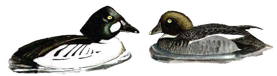

Goldeneye
An unusual yet regular winter visitor to the reservoir.

??/12/27 - Single bird shot.
No records between 1928 & 1954.
27/11/55 - Single bird. Seen also on 04/12 & 08/12.
02/12/56 - Single bird.
10/11/57 - Single female. Seen again on 27/11 & 27/12.
12/01/58 - 3 birds.
05/11/59 - Single bird. 2 birds present on 15/11 & 26/11.
17/01/60 - 2 females.
20/03/60 - Pair.
15/01/61 - Single bird.
24/01/65 - Single bird.
02/12/65 - Single bird. Recorded again on 16/12.
09/01/69 - Single bird. Recorded again on 23/02.
12/03/70 - Single bird.
28/12/70 - Single bird.
09/12/71 - 2 birds.
02/03/74 - 2 birds.
??/03/76 - 5 birds. Record count to date.
17/12/78 - 2 birds. Single bird on 23/12.
06/01/79 - 3 birds, although single bird seen on several dates between January & April 6th.
23/02/80 - Single male. Remained until 27/03.
28/12/81 - 3 birds.
29/11/82 - 5 birds.
22/12/83 - 3 birds.
01/01/84 - Single bird. Single bird also seen on 18/02.
25/12/84 - Single bird.
22/03/85 - Single bird.
03/11/85 - Single female. 2 females on 07/12.
08/03/86 - 4 birds. 1 or 2 were reported during the 1st winter period.
24/01/87 - 1 or 2 birds recorded. Remained until 22/03. 1 or 2 also recorded on 15/11.
31/01/88 - 2 birds. Single bird on 14/02.
16/10/88 - Single bird. Single female on 02/11.
1991 - Single bird during 2nd winter period.
25/01/92 - Single female.
29/11/92 - Single female.
04/11/93 - Single female.
28/11/94 - Single eclipse-plumaged female.
17/12/94 - Single male. 2 females present on 28/12.
13/11/96 - Single female, for one day only. 2 females seen on 15/12.
23/01/97 - Single female. Remained until 16/02.
25/02/99 - 2 males.
12/1/99 - Single 1st winter male. 2 females seen on 15/11.
07/11/00 - Single male.
12/11/02 - Single female.
21/10/03 - Single.
24/11/03 - Single male.
06/12/03 - Single female.
14/11/05 - Single bird.
03/11/06 - Single male.
27/06/07 - Single female, an unprecedented summer visiting bird.
24/11/07 - Single female.
16/01/08 - Single female
24/01/08 - Single female
09/03/09 - Single female
29/12/09 - Single female
15/01/13 - Single female
01/12/16 - Redhead, probably first winter male, stayed well into 2017
01/01/17 - The imm male from last year stayed until 05/04
11/11/19 - Single male stayed from 11/11 to 26/11
22/11/21 - 3 redheads arrived in cold weather along with 3 redhead Goosanders to stay just one day (KGH)
03/04/25 - 1st winter male (DWH)